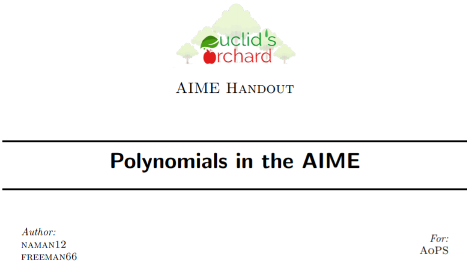
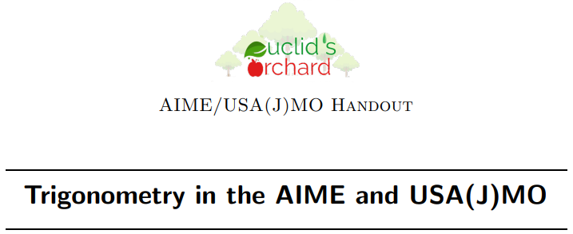

Mission Statement
Euclid's Orchard serves to provide high quality handouts to teach those who are interested in a variety of subjects.
About Us
We are a group of students who enjoy learning and wanted to share that with others. Our name is
Euclid's Orchard, which is an array of one-dimensional "trees" of unit height planted at the lattice points in one quadrant of a square lattice.
In our orchard we serve:
- Douady Rabbit
- Ham Sandwich (Theorem)
- Chicken Mcnugget (Theorem)
- Minkowski Sausage
If it isn't obvious, these are all parts of math! I recommend you search these up - some of these are advanced, but its always fun to learn about weirdly named theorems.
There are a few very instrumental people to the succsss of this group. Although originally founded by me ("me" will always refer to the owner of this website, Dylan) and naman12 (who was extremely helpful - the inspiration for this whole webpage was naman12), we have branched out to other writers, who will be writing soon! As of 05.13.20, the writers are
- freeman66 (me!)
- naman12
- anonman
- Eyed
- jsharmz
- vk_233
- HrishiP
- Alculator11
The proofreaders are
- WIzardMath
- CJ Quines
- nikenissan
- twinbrian
- minecraft legend
Thanks to everyone - this wouldn't be possible without you!
Math Handouts
General Handouts
These handouts cover multiple ranges (i.e. the ones detailed below).
- One Page Summaries V1.0 (One Page Summaries)
Written by naman12 and me. This was a project to condense one topic into one page by picking what we thought was important. This is by no means a comprehensive guide - it is one page after all! I recommend reading this for review, or even just for fun. We hope you enjoy! And feel free to suggest other ideas! We have a list, but we would love to know what you would like to see first.
AMC-AIME Handouts
These handouts range from intermediate AMC to introductory AIME.
- Recursion in the AIME (
PDF Version

Table of Contents

Written by Jeffrey Chen and me, with editing by Peter Pu. A nice introductory handout to the idea of forming and solving recursions.
- Modular Arithmetic in the AMC and AIME (
PDF Version

Table of Contents

Written by me to introduce modular arithmetic. Goes over most concepts in modular arithmetic, although some overlapping topics with other parts of number theory may have been left out.
- Modular Arithmetic in the AMC and AIME (
PDF Version
) (Table of Contents
)
Written by me and nikenissan, covering arithmetic, geometric, arithmetico-geometric, telescoping, and recursive sequences. Note that recursive sequences is briefly mentioned, since we already have an article on recursion.
AIME-USA(J)MO Handouts
These handouts range from intermediate AIME to introductory USA(J)MO.
- Polynomials in the AIME (
PDF Version
) (Table of Contents
)
This was written by naman12 and me. A complete guide on how to use polynomials on the AIME. Includes (almost) every polynomial problem on the AIME and also problems from other sources (such as RMO and HMMT).
- Proofs in Pre-USA(J)MO (
PDF Version

Table of Contents

Written by Jai Sharma. Introduces proofs very nicely - so big thanks to him!
- Trigonometry in the AIME and USA(J)MO (
PDF Version
) (Table of Contents
)
This was written by naman12 and me. A complete guide on how to use trigonometry on the AIME and USA(J)MO. Includes (almost) every trigonometry problem on the AIME, with worked out problems as well as more than one hundred hints to selected problems. There quite a few olympiad problems sprinkled in, too.
Higher Math Handouts
These handouts involve college math. They are more of a starting place rather than serious notes. Refer to Evan Chen's Napkin Project if you want something more rigorous.
- Group Theory (
PDF Version
) (Table of Contents
)
This handout was made by taking beamer slides by Emma Cardwell and Matthew Ho and piecing them together. It is an introductory piece with some basic ideas introduced. Apologies for the bad picture quality for contents; you should check the PDF instead.
Error Reporting
If you would like to report an error, click here. Instructions will provided in the link.
Help Us Out
If you would like to contribute to Euclid's Orchard, click here. We'd appreciate the help!
{kind=link}
{kind=link}
{kind=link}
{kind=link}